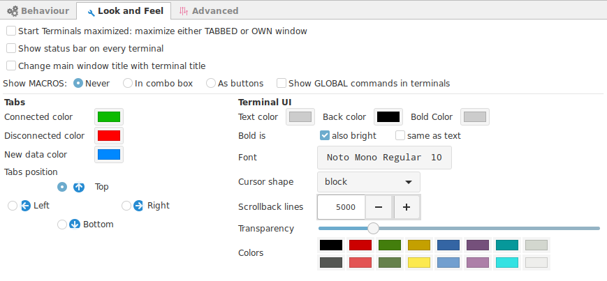
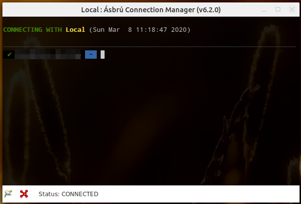
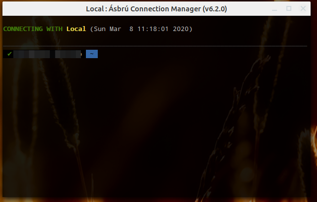
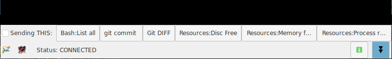
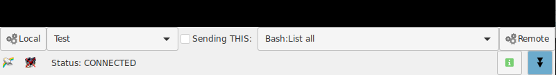

Look & Feel
This options apply to all terminals. If you need a particular terminal to behave differently is best to configure the look and feel options at the connection level.

- Start terminal maximized : If the new launched terminal window or tabbed window should be maximized.
- Show status bar on every terminal : Add extra information and buttons at the bottom of the termina.
- Change main window title with terminal title : Sets the main window (tabs window) title with the title from the selected terminal tab.
Password Managers
Changing the main window title with the current selected Tab, is useful with some password applications (like KeePassXC), that uses the main title window to execute auto typing sequences.
Example of a terminal windows with a status bar.

Example of terminal window without the status bar.

- Show MACROS: Show access to local macros configured in a terminal
- Never : Do not show configured macros.
- In combobox : Show as a selection box, recommended when you have a long list.
- As buttons : Recommended when you have a very short list of macros.
- Show GLOBAL commands in terminal : Add the local and global commands to the list of available macros.
Example macros as buttons

Example macros as list

-
Tabs : Define colors for tabs depending on their terminal current state. Set the position to locate the tabs.
-
Terminal UI
- Text color : Default color for text.
- Back color : Default background color for terminal.
- Bold color : Default bold color
- Bold is
- Also bright : show bold text as bright text too. (Not available in all vterm versions)
- Same as text : show bold text as normal default text, no distinction
- Font : Set the font and size for all terminals.
- Cursor shape : Cursor shape to use in the terminal.
- Scrollback lines : How many lines of history to store to scroll back.
- Transparency : Set background transparency for the terminal.
- Colors : Set your predefined colors to override the basic 16 terminal colors.
- Top row are the normal text colors.
- Bottom row are the bold text colors.